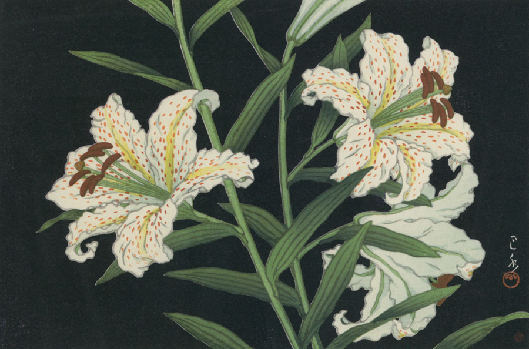

作品名 「山百合」
花言葉 「純粋」「無垢」「威厳」
百合
「純粋」
ユリ全体の花言葉は、「純粋」「無垢」「威厳」です。ユリはキリスト教では聖母マリアの象徴「純潔のシンボル」と言われ、古くから「母性の象徴」とされてきました。百合の花名は、茎が細く花が大きいので、風が吹くと花が揺れるところから「揺すり」と言われ、それが変化して「百合（ユリ）」と呼ばれるようになりました。
山百合
川瀬巴水
大正から昭和にかけて、衰退した日本の浮世絵版画を復興すべく吉田博らとともに新しい浮世絵版画である新版画を確立、伝統的な浮世絵版画の木版技術を使用し、高い芸術性をもつ木版画制作を目指して興った人物。その代表的な版画家である川瀬巴水は、旅をこよなく愛し、日本各地の旅先や自身の故郷・東京の風景を題材に日本的な美しい風景を叙情豊かに表現し木版画を制作した。この作品は漆黒の背景の上に美しい山百合が色鮮やかに咲き誇っている。
| 作品名 | 山百合 |
| 作者 | 川瀬巴水 |
| 制作年 | 1947年 |
| 種類 | 木版 |
| 寸法 | 23.9×36.2cm |
| 所蔵 | 大田区立郷土博物館 |